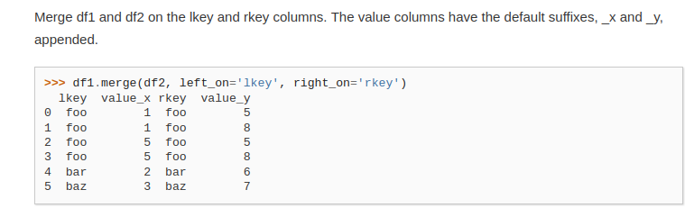
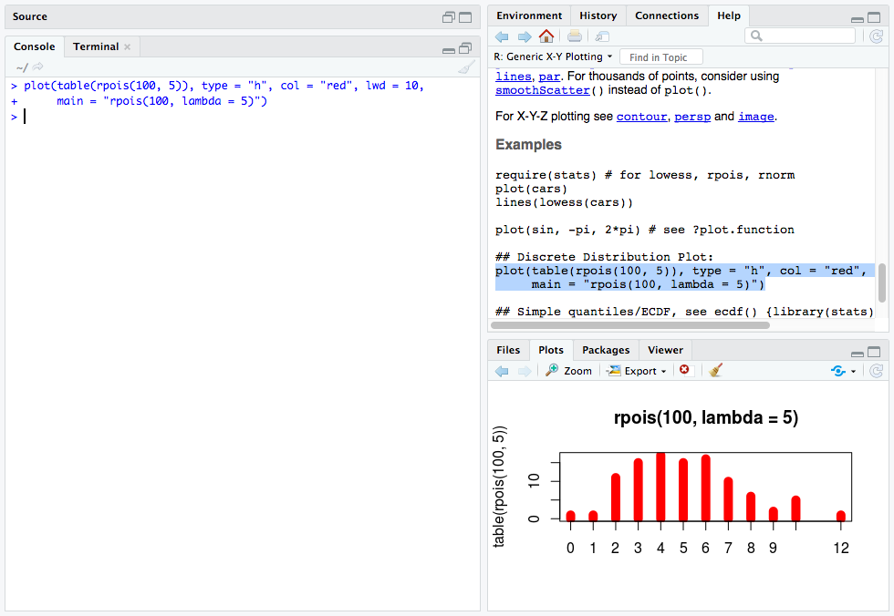
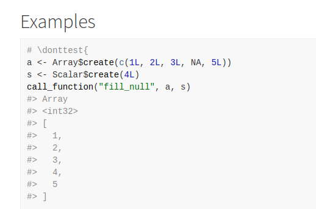

I’m currently working on adding to the documentation of the arrow R package, and I’ve started thinking about the qualities of good examples. Specifically, I’m referring to the examples included as part of function documentation. In my experience, the best way for me to achieve rapid familiarity with an R function I haven’t worked with before, or understand how to use a function about which I already understand the basics, is by having example code that I can run. In the book ‘R Packages’, Hadley Wickham remarks that examples are “a very important part of the documentation because many people look at the examples first” and rOpenSci recommend that each of a package’s exported functions should be accompanied by examples.
In this blog post, I will explore the things that I believe make for good function examples in documentation, focussing mainly on R.
What good looks like in R
I asked people on Twitter for their opinions of good R package documentation in general, and Jonathan Sinclair highlighted the ‘examples’ section from dplyr::case_when, the beginning of which is shown below.

I think Jonathan is spot on in his assessment. To paraphrase, the highlights for him are:
- there is next to no prose or intro
- there are plenty of comments, as needed, to explain the examples
- there is a variety of different examples
- there are examples of what not to do.
This kind of documentation appeals to my skim-reading self. If I’m trying to accomplish a task, sometimes I just want to run some code and see what happens to get an intuitive feel for what a function does. While I am fully prepared to slow down and read the rest of the documentation, a “quick win” motivates me to invest the additional effort. It tells me that the developers of this code have prioritised making things easy to understand and that the time I am investing will pay off.
I’ve been skimming through the documentation of some tidyverse and related packages - as I consider many of these to be well documented and easy to read. Here are some things I’ve observed which I think one can do to make function examples look great:
- include the most basic usage of a function
- use very simple toy datasets or standard in-built datasets
- demonstrate non-obvious behaviours of a function
- demonstrate different parameter values/combinations where relevant
- demonstrate any unusual parameters
- demonstrate on different objects if appropriate
- sometimes go beyond the use of an individual function to include common mini-workflows
- group documentation and examples for similar functions together
- include examples that may lead to unexpected results
- include comments to explain examples
- no examples for deprecated functions to discourage their use
- no unpredictable external dependencies -
rvest::html_textmanually creates HTML to demonstrate capabilities rather than scraping an external site - sometimes showing the output when it adds to the example (e.g.
tidyselect::starts_with()and many other examples from that package) - examples should be correct and run without error (unless intended to show erroneous output)
What bad looks like in R
I am not intending to “name and shame” any package authors who haven’t included examples for their functions. It may have been overlooked, there may be plenty of explanation elsewhere, or they may have felt that the code was not sufficiently complex to require examples. It might be true that it seems obvious what a function does, but that makes assumptions about the users of your code that might not hold.
What good looks like generally
When reading through examples, one thing that struck me is that when I’m looking at Python docs in Jupyter Notebook (press shift + tab), I also see the output of running the examples.
Similarly, both examples and outputs are shown in the official docs for some libraries, for example, pandas.

I think this is a helpful feature - less effort is required to see how a function works.
In R function documentation, runnable code is often included, but in most cases needs to be manually run by the reader to see the output. I’m torn as to whether this is good or not. On the one hand, it encourages you to run the code and get a more tangible feel for what it does and saves valuable space in the Viewer window in RStudio. On the other hand, it adds an extra manual step to your workflow and lengthens the time until that precious “quick win” of enlightenment when exploring a new function.
You get a lot closer to this on the website rdrr.io, which indexes R package documentation and allows examples to be run inline. However, examples are run one after the other without the original code being displayed. So in the case of multiple examples, you have to match up the output to which example it is from.
Some packages include output as comments within their examples. For instance, the tidyselect package; here’s an example from tidyselect::all_of:
All that said, while the ability to see the output of examples is a nice-to-have, I don’t think it’s essential to good function documentation. With any piece of documentation, it’s necessary to consider the purpose; at a minimum, examples exist to tell the reader how to use a function, and you don’t need to see the output to do that.
Since I first wrote this, I found out that it is possible to easily run examples from help files by selecting them and then hitting Ctrl+Enter, the same as running code in the Source pane.

Another thing I wasn’t aware of - pkgdown - commonly used to automatically render docs for packages run examples and displays the output underneath. Check out the example below from the Arrow pkgdown site.

In conclusion, good examples make functions easier to work with and help readers of your documentation gain a deeper understanding of how a function works. While any examples are better than no examples, you can give your users the best chance of success when using your code with careful thought about the content of your documentation.
Huge thanks to everyone who responded to my Twitter thread, and to my fantastic colleague Joris Van den Bossche for reading the first draft of this, and our conversations about how things are done in R and Python.